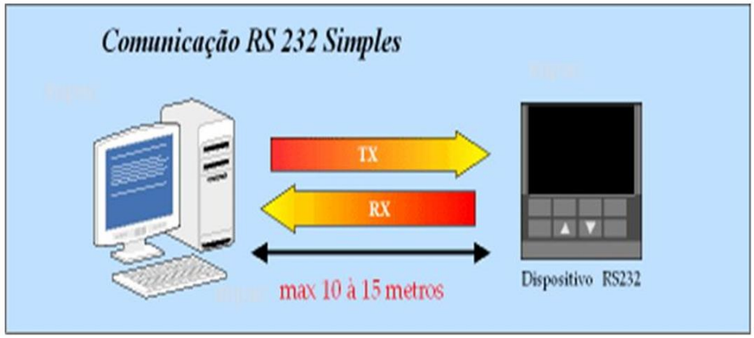
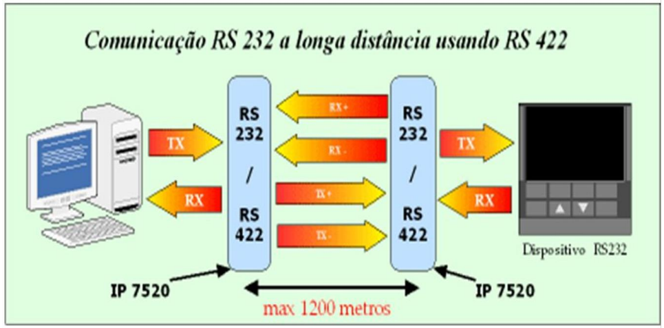
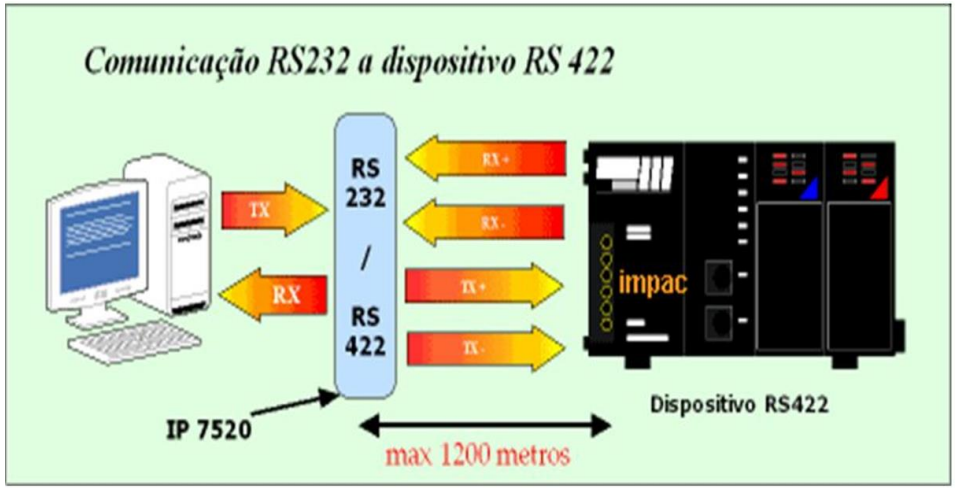

Tipos de Portas de Comunicação.
Portas de Comunicação
-
Comunicação de Dados;
-
Normas Técnicas;
-
EIA-RS232-C e Outras;
Porta Comunicação de Dados.
Comunicação de Dados
- Consiste na transferência de informações entre dispositivos eletrónicos;
- Os dispositivos podem ligar-se diretamente (ponto-a-ponto) ou até formar redes;
- A comunicação entre dispositivos dá-se através de 3 maneiras diferentes: simplex, half-duplex ou full-duplex;
Porta Normas Técnicas.
Normas Técnicas
-
EIA RS-232-C:
Originalmente utilizada para ligar um PC a um MODEM; Permitiu que diversos equipamentos de diferentes fabricantes pudessem comunicar entre si;  -
EIA RS-422:
Até 10 receptores em paralelo; Cabo ou par trançado;   -
EIA RS-423:
Até 300 kbps para distâncias de 12 metros;Até 3 kbps para distâncias de 1200 metros;
- Circuitos integrados:
- 26LS30.
- 26LS32.
-
EIA RS-449:
-
Define interface funcionais e mecânicas;
-
Projetado para substituir a RS-232-C, porém são incompatíveis elétrica e mecanicamente;
-
O conector possui 37 pinos;
-
Define interface funcionais e mecânicas;
-
EIA RS-485:
-
Define as características elétricas;
-
Ligações em redes (multiponto);
-
Sinal balanceado;
-
Velocidade de 10 Mbps;
-
O par trançado pode conter até 32 drivers e 32 receptores;
-
Define as características elétricas;
-
EIA RS-530:
-
Substitui a RS-449 e complementa a RS-232-C;
-
Conector com 25 pinos;
-
Define interfaces elétricas e mecânicas entre DTE e DCE que
transmitem dados seriais (síncronos ou assíncronos);
-
Não é compatível com RS-232-C;
-
Taxa de transmissão entre 20 kbps e 2 Mbps;
-
Compatível com RS-449;
-
Substitui a RS-449 e complementa a RS-232-C;